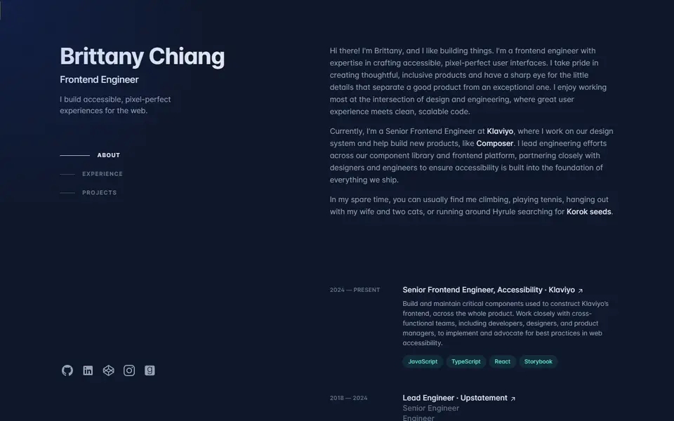
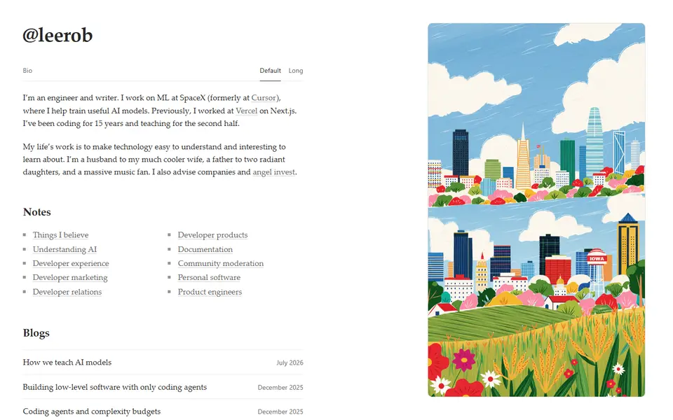
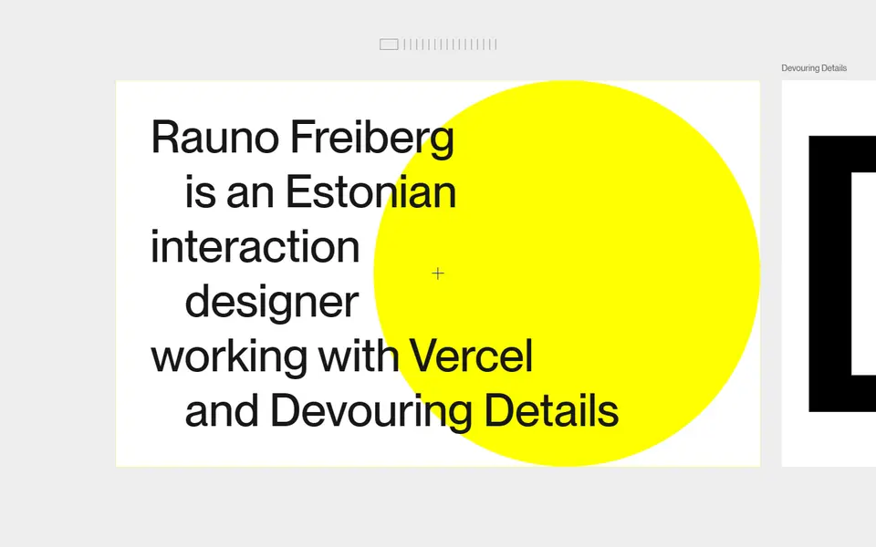
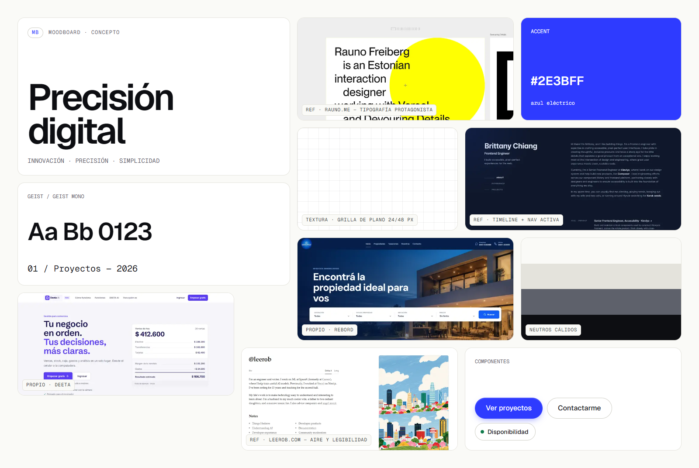
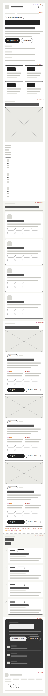
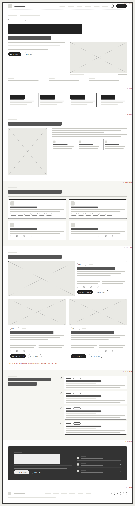
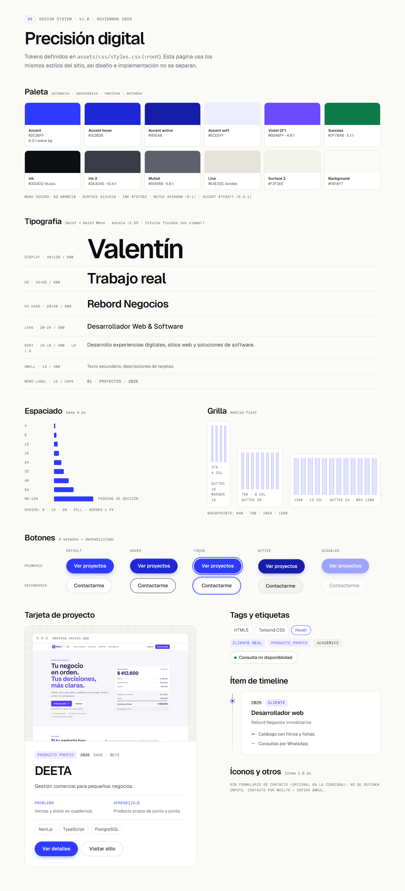
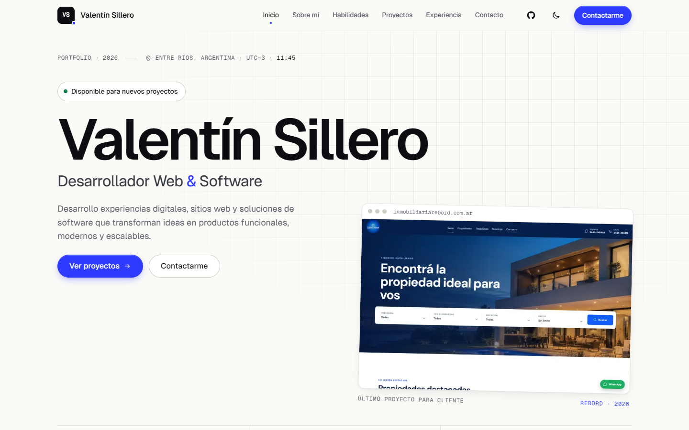
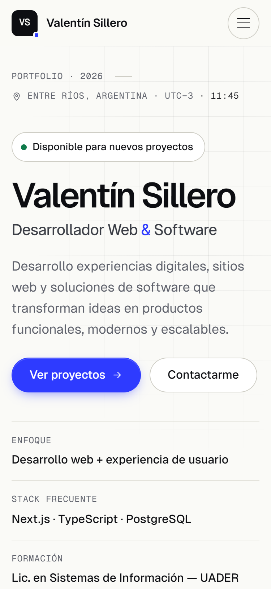

TF Portfolio web personal · Proceso de diseño
Desarrollador Web & Software — concepto “Precisión digital”
Comercio, profesional o pyme de la región. Necesita ver en < 30 s qué hago, un proyecto real parecido a su caso y cómo contactarme.
Reclutador / líder técnico: stack, proyectos publicados, GitHub.
Docente: 9 secciones, caso de estudio, accesibilidad.
Recibe el link por WhatsApp → abre en el celular → “Ver proyectos” → Rebord (cliente real) → visita el sitio → caso de estudio → “Escribirme un email”. Meta: primer proyecto real en < 30 s.
“No necesito saber qué es Next.js. Necesito ver que ya lo hiciste para alguien como yo.”

Funciona: nav por anclas con sección activa, timeline con período y tags, skip link.
No funciona: paleta oscura muy copiada; mucho texto antes de un proyecto; pensado para reclutadores.
Tomo: sección activa y timeline.

Funciona: velocidad, legibilidad, jerarquía tipográfica, mailto directo.
No funciona: casi no muestra proyectos ni imágenes: un cliente no ve “qué hizo”.
Tomo: aire, sans sobria, contacto visible.

Funciona: identidad fuerte con pocos recursos; microinteracciones (copiar email).
No funciona: navegación experimental; no comunica servicios ni contacto rápido.
Tomo: copiar email, detalle tipográfico, un solo acento.

Un único acento azul eléctrico #2E3BFF; capturas reales de productos digitales en marcos de navegador.
Grilla de plano, líneas de 1 px, índices numerados y Geist Mono para datos. Métricas con su fuente.
Fondo blanco cálido #FAFAF7, mucho aire, escala tipográfica corta, íconos de línea, sin gradientes ni emojis.
Me diferencio de la referencia (oscura navy + verde) con una base clara y cálida.
Sobre mí sube antes de Habilidades: para un cliente, la confianza personal va antes del detalle técnico. Coincide con el orden del menú.
Header fijo con CTA siempre visible · sección activa · menú hamburguesa accesible · caso de estudio en página propia (compartible) con “Volver” y “Siguiente proyecto”.
Dudas resueltas: Cubrí → Proyectos (y logro en Formación); DEETA → Proyectos (producto) y Experiencia (rol); cantidad de tecnologías → Métricas.


Página completa con las 9 secciones, generadas desde una misma estructura.

Paleta (primario, secundario, neutros, estados) con contraste AA, modo claro y oscuro.
Geist + Geist Mono (2 familias, auto-hospedadas, font-display: swap). Escala de 12 a 120 px.
Base 4 px · 4 / 8 / 12 columnas · breakpoints 640 · 768 · 1024 · 1280.
Botón en 4 estados + disabled · tag · pill · badge · tarjeta de proyecto · ítem de timeline · modal.


Navegación por anclas, menú mobile, modales de detalle y caso de estudio. Microinteracciones: hover en tarjetas, sección activa, copiar email, tema oscuro.
figma.com/design/3AxCDCuNJOfTUIWiVaQyt2 — 3 páginas: Proceso UX, Design System (variables, estilos y componentes) y Prototipo navegable desktop + mobile con menú overlay.
| # | Tarea |
|---|---|
| T1 | Encontrá el email de Valentín. |
| T2 | Abrí el sistema DEETA. |
| T3 | Encontrá un proyecto inmobiliario y contá qué problema resolvía. |
| T4 | ¿Qué tecnologías usa para el frontend? |
| T5 | Abrí el proyecto más reciente y su caso de estudio. |
| T6 | (Mobile) Usá el menú para ir a Experiencia. |
| Hipótesis | Cambio aplicado |
|---|---|
| El contacto no es lo bastante visible | Botón “Contacto” siempre visible en el header mobile |
| Textos de tarjetas largos en mobile | Textos de tarjetas 29–36 % más cortos |
| “Caso” y “Visitar sitio” se confunden | Botón principal + enlace externo subrayado |
Validará las tres hipótesis anteriores con las tareas T1–T6.
Performance
Accessibility
Best Practices
SEO
Inicio y caso de estudio: 100 en las 4 categorías · LCP 1.6 s · CLS 0.
Sitio: portafolioweb-taupe-chi.vercel.app · Repo: github.com/ValentinSillero/PortafolioWeb · Figma: figma.com/design/3AxCDCuNJOfTUIWiVaQyt2